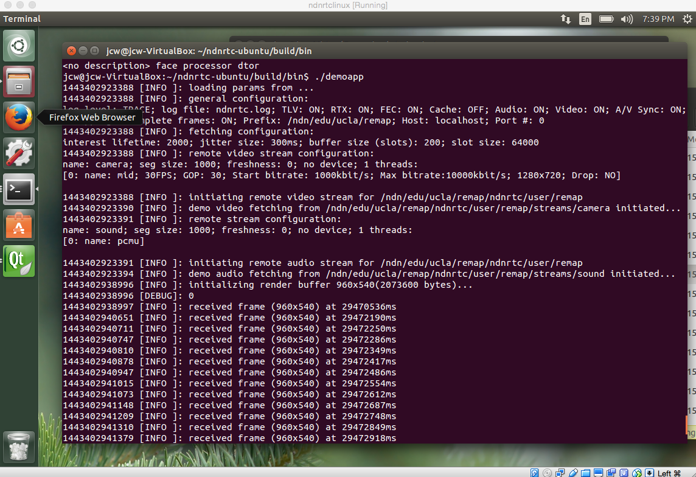

Team Members
Jiachen Wang (@jiachenwang),Zhehao Wang (), Peter Gusev (@peetonn)
Previous Status
Previously NDN-RTC and ndncon are only available on OS X. NDN-RTC is a library for real-time streaming over NDN that is compatible with Linux. ndncon is a cocoa app on OS X which uses NDN-RTC to provide video and audio conferencing.
Approach
- Big effort: resolving NDN-RTC linking errors ==> Making NDN-RTC available on Ubuntu Linux (Thanks to Zhehao's help)
- Building console headless demo app: Allow comsuming media streams from remote producer
Results

demo app on Ubuntu
It can get video and audio streams from remote producer, playout audio and show video frames it gets on the console.
TODO: GUI app on top of headless app
- User discovery
- Group chat
Future
- Testing NDN-RTC in larger scale: delopy on Cloud like Amazon and improve multi-party communication performance
- Testing NDN Testbed and NFD performance and provide feedback for NFD team